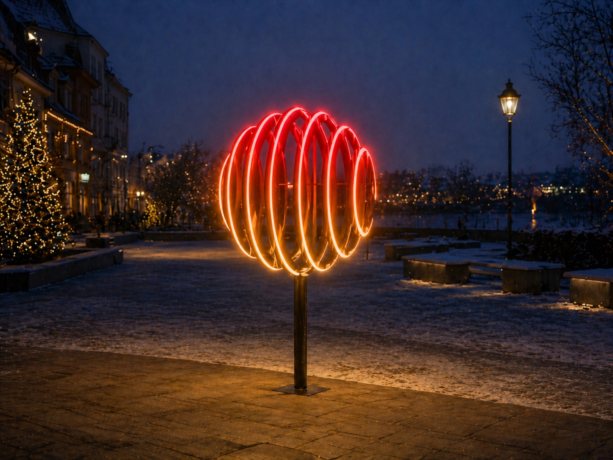
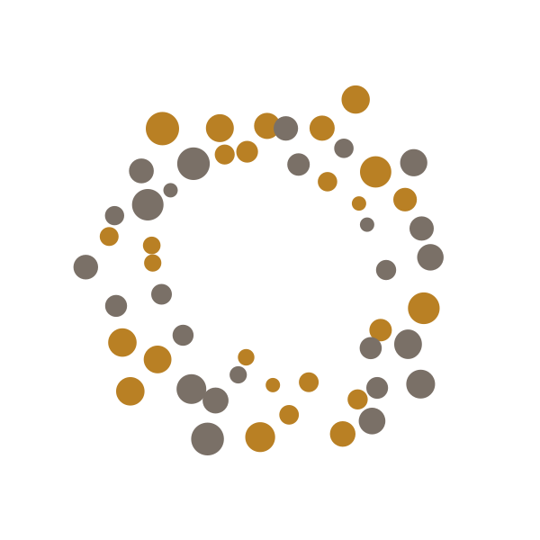
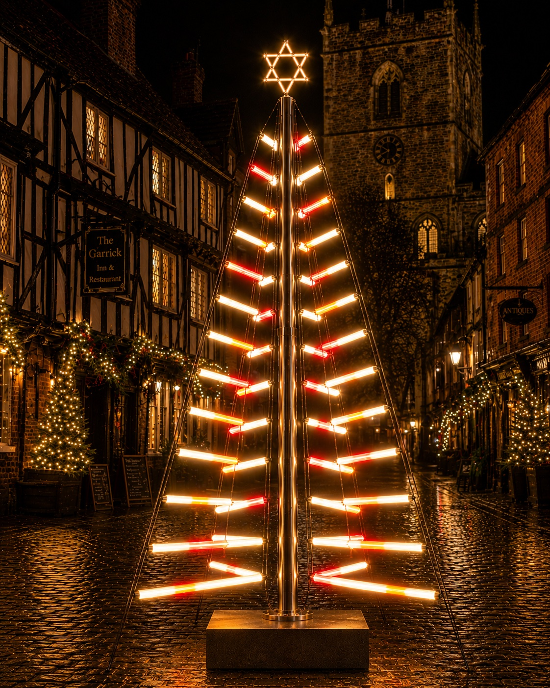
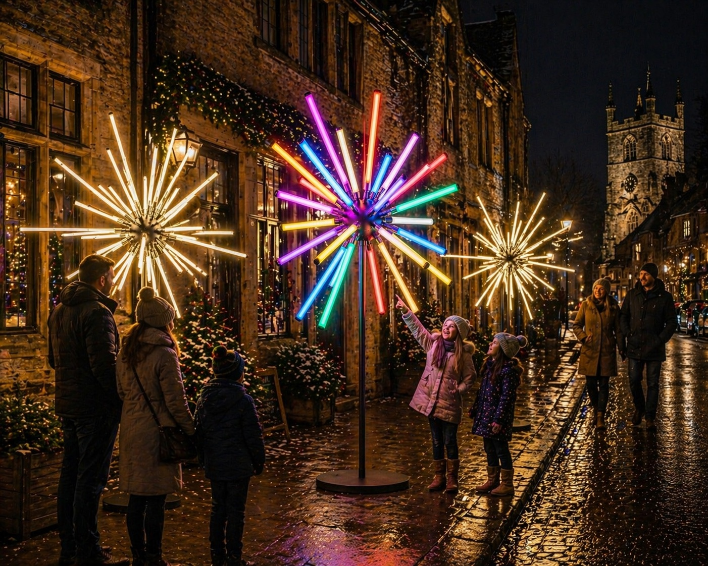

Landmark feature
Illuminated Bauble
A premium sculptural landmark feature intended for focal points, entrances and gathering spaces.

Kevin Haggar Light DesignGardens • Public Spaces • Winter Trails • Events
Contemporary illuminated forms designed to create atmospheric, memorable experiences in outdoor spaces.
Kevin Haggar Light Design creates bespoke illuminated installations that combine engineering, craftsmanship and atmospheric lighting design.
From contemporary garden features to winter trail concepts, each piece is developed to complement its setting while giving visitors a clear focal point and a sense of discovery.
Freestanding sculptural concepts designed for outdoor environments, with lighting behaviour ranging from warm ambience to interactive colour response.

Landmark feature
A premium sculptural landmark feature intended for focal points, entrances and gathering spaces.

Contemporary seasonal form
A contemporary interpretation of the Christmas tree form suitable for gardens, plazas and immersive winter routes.

Visitor-focused installation
A modular installation suited to pathways and linear trails, where subtle animation can respond to movement through the space.
For gardens, public spaces, winter trails and event installations.